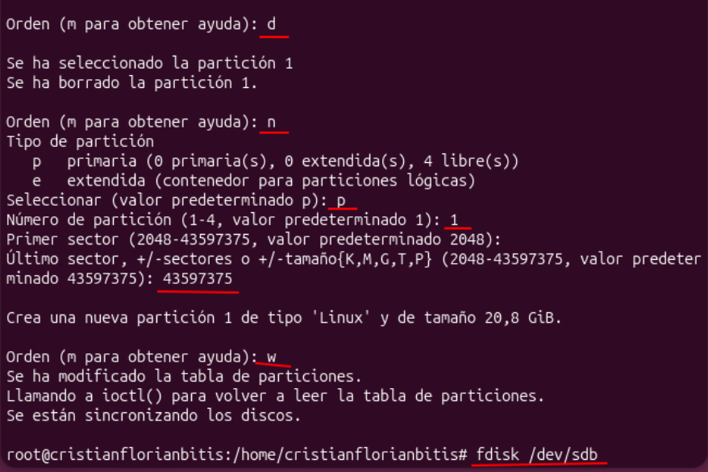
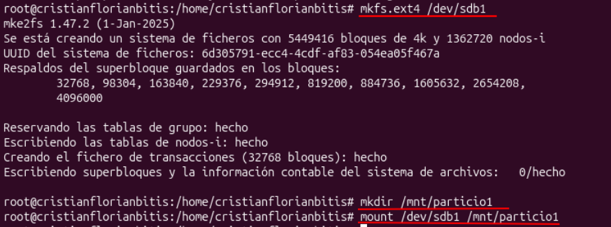
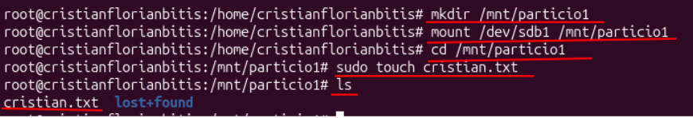
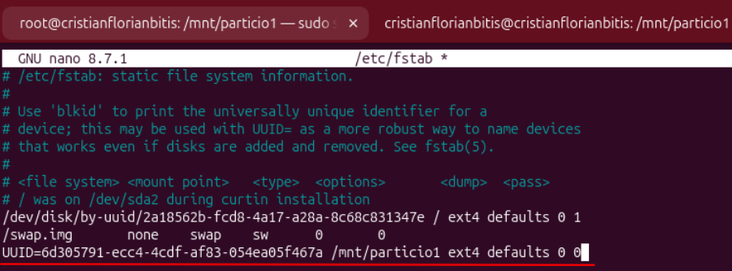
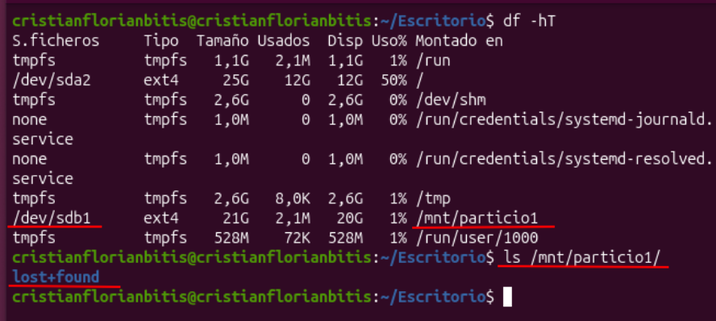
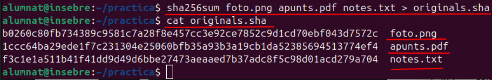
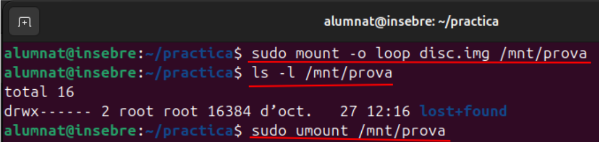
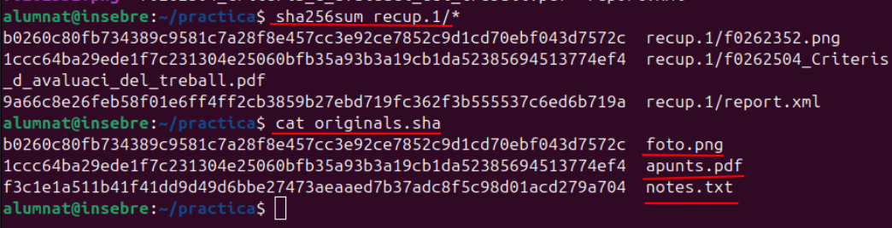
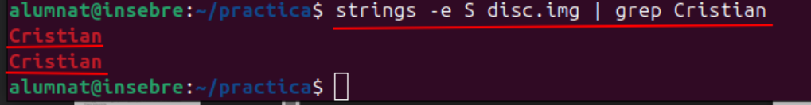
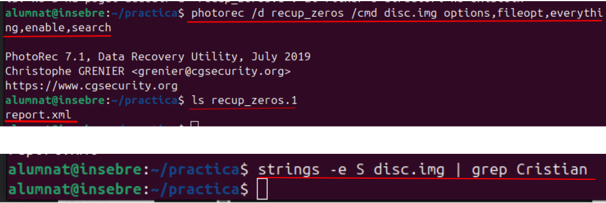

1. Sistemes de fitxers i particions
1.1. Estructura física d'un disc
L'estructura física d'un disc és la manera com està construït per dins i com guarda les dades. Un disc dur tradicional té diferents parts que permeten llegir i guardar la informació.
- Disc: dispositiu que serveix per guardar informació, com documents, fotos i programes.
- Plat: superfície circular on es guarden les dades en un disc dur tradicional.
- Pista: cercle que hi ha a la superfície del plat i on es guarden les dades.
- Sector: part xicoteta d'una pista on es guarden les dades. Pot ser de 512 bytes o de 4096 bytes.
- Capçal de lectura: peça que llig i escriu la informació del disc dur.
- SSD: disc que guarda les dades en memòria electrònica i no té peces mòbils com els discos durs tradicionals.
En els discos actuals també es parla de blocs, que són unitats que utilitza el sistema de fitxers per organitzar les dades.
1.2. Estructura lògica d'un disc
L'estructura lògica és la manera com el sistema operatiu organitza la informació dins del disc. No explica com està construït físicament, sinó com es guarden i es troben els fitxers.
- Partició: divisió d'un disc en diferents parts. Cada part es pot utilitzar per guardar informació.
- Sistema de fitxers: sistema que organitza els fitxers i les carpetes dins d'una partició. En Linux un exemple és ext4.
- Formatatge: procés de preparar una partició o un disc perquè puga utilitzar un sistema de fitxers.
- Muntatge: acció de connectar un disc o una partició a una carpeta per poder accedir al seu contingut.
- Directori: és una carpeta que serveix per ordenar els fitxers.
- Metadades: informació sobre els fitxers, com el nom, la mida, la data i la ubicació de les dades.
Per exemple, quan connectem un USB a l'ordinador, el sistema el pot muntar perquè puguem obrir les carpetes i els fitxers.
En aquesta pràctica treballarem amb un disc virtual i amb el sistema de fitxers ext4, que és un dels utilitzats en Linux.
L'estructura lògica explica com s'organitzen les dades dins d'un disc. Per poder guardar informació, podem dividir el disc en particions i utilitzar un sistema de fitxers.
- Partició: és una divisió d'un disc que podem utilitzar per guardar informació.
- Sistema de fitxers: serveix per organitzar els fitxers i les carpetes. En Linux un dels més utilitzats és ext4.
- Formatatge: és preparar una partició per poder guardar-hi informació.
- Muntatge: és connectar una partició a una carpeta per poder accedir als seus fitxers.
- UUID: és un identificador únic que serveix per reconéixer una partició.
1.2.1. Crear i configurar una partició en Linux
En aquesta pràctica vam crear una partició nova en un disc de Linux. Després li vam donar format amb ext4, la vam muntar en una carpeta i vam configurar el sistema perquè es muntara automàticament quan s'iniciara l'ordinador.
Crear una partició amb fdisk
Primer vam utilitzar l'ordre fdisk per treballar amb el disc /dev/sdb. Amb aquesta eina vam eliminar la partició anterior i en vam crear una de nova de tipus Linux.
fdisk /dev/sdb
Donar format i muntar la partició
Després vam utilitzar l'ordre mkfs.ext4 per donar format a la partició /dev/sdb1. Això permet utilitzar el sistema de fitxers ext4 per guardar informació.
mkfs.ext4 /dev/sdb1A continuació vam crear una carpeta anomenada /mnt/particio1 i vam muntar la partició en aquesta ubicació.
mkdir /mnt/particio1
mount /dev/sdb1 /mnt/particio1
Crear un fitxer dins de la partició
Una vegada muntada la partició, vam entrar dins de la carpeta i vam crear un fitxer de text anomenat cristian.txt. Amb l'ordre ls vam comprovar que el fitxer s'havia creat correctament.
cd /mnt/particio1
sudo touch cristian.txt
ls
Configurar el muntatge automàtic amb fstab
Després vam editar el fitxer /etc/fstab. Aquest fitxer guarda la informació de les particions que volem que es munten automàticament quan s'inicia Linux.
Vam afegir l'UUID de la partició, el punt de muntatge / mnt/particio1 i el sistema de fitxers ext4. L'UUID és un identificador únic que permet reconéixer la partició.

Comprovar que la partició funciona
Finalment vam utilitzar l'ordre df -hT per comprovar les particions que estaven muntades i el tipus de sistema de fitxers. També vam utilitzar ls per veure el contingut de la carpeta /mnt/particio1.
df -hT
ls /mnt/particio1En el resultat vam poder veure que la partició /dev/sdb1 estava muntada correctament i que dins de la carpeta apareixia el fitxer cristian.txt.

1.3. Pràctica de recuperació de fitxers després d'un formatatge
Objectiu: comprovar si es poden recuperar fitxers després de formatar un disc. També veurem què passa quan escrivim zeros sobre totes les dades del disc.
Per fer aquesta pràctica utilitzem un disc virtual, que és un fitxer que fa de disc. Així no toquem el disc real de l'ordinador.
1.3.1. Preparar la pràctica
Primer instal·lem el programa PhotoRec, que serveix per recuperar fitxers. Aquest programa ve dins del paquet testdisk.
sudo apt install testdiskDesprés creem una carpeta anomenada practica i entrem dins.
mkdir -p ~/practica
cd ~/practica
pwdA continuació posem dins de la carpeta una foto JPG i un document PDF. Els canviem el nom perquè siguen foto.jpg i apunts.pdf.
També creem un fitxer de text amb aquesta ordre:
echo "El meu secret és que m'encanta la pizza amb pinya" > notes.txtAmb l'ordre ls -l podem comprovar que tenim els tres fitxers.
1.3.2. Crear el disc virtual
Ara creem un fitxer de 200 MB ple de zeros. Aquest fitxer serà el nostre disc virtual.
dd if=/dev/zero of=disc.img bs=1M count=200 status=progressAquesta ordre utilitza el programa dd per copiar dades. Les parts més importants són:
- if=/dev/zero: utilitza zeros com a dades d'entrada.
- of=disc.img: crea el fitxer que farà de disc.
- bs=1M: copia blocs d'1 MB.
- count=200: copia 200 blocs, és a dir, 200 MB.
- status=progress: mostra el progrés.
Després comprovem que s'ha creat correctament:
ls -lh disc.img1.3.3. Formatar el disc i copiar els fitxers
Primer donem format al disc virtual amb ext4:
mkfs.ext4 disc.imgmkfs serveix per crear un sistema de fitxers. En aquest cas, ext4 és el sistema que utilitzarem.
Després creem una carpeta on muntarem el disc i el connectem:
sudo mkdir -p /mnt/prova
sudo mount -o loop disc.img /mnt/provaMuntar el disc vol dir fer que el seu contingut aparega dins d'una carpeta. L'opció -o loop permet muntar un fitxer com si fora un disc.
Ara copiem els tres fitxers dins del disc:
sudo cp foto.jpg apunts.pdf notes.txt /mnt/prova/
ls -l /mnt/provaPodem comprovar que hi ha la foto, el PDF, el text i la carpeta lost+found, que crea ext4 automàticament.
1.3.4. Guardar els hashes originals
Un hash és com una empremta digital d'un fitxer. És un codi que permet comprovar si dos fitxers són exactament iguals.
Amb aquesta ordre calculem els hashes dels tres fitxers i els guardem en un document:
sha256sum foto.jpg apunts.pdf notes.txt > originals.sha
cat originals.shaGuardem aquests resultats perquè després els compararem amb els fitxers recuperats.

Abans de tornar a formatar el disc, el desmuntem:
sudo umount /mnt/provaDesmuntar vol dir desconnectar el disc de la carpeta abans de fer altres operacions.
1.3.5. Fer un formatatge d'alt nivell
Ara tornem a formatar el disc amb aquesta ordre:
mkfs.ext4 -E nodiscard disc.imgAquesta ordre torna a crear l'estructura del sistema de fitxers ext4, però no esborra expressament tot el contingut de les dades. Quan demane confirmació, escrivim y i premem Enter.
Després muntem el disc per veure què hi ha dins:
sudo mount -o loop disc.img /mnt/prova
ls -l /mnt/prova
sudo umount /mnt/provaAra només apareix la carpeta lost+found. Els fitxers ja no apareixen en la llista, però això no significa que totes les dades s'hagen esborrat del disc.

1.3.6. Recuperar els fitxers amb PhotoRec
Ara utilitzem PhotoRec per intentar recuperar els fitxers. Aquest programa busca les dades directament dins del disc, sense necessitar la llista original de fitxers.
photorec /d recup /cmd disc.img options,fileopt,everything,enable,searchPhotoRec busca diferents tipus de fitxers i desa els que troba en una carpeta anomenada recup.1.
Quan acaba, mirem el contingut de la carpeta:
ls recup.1Podem trobar la foto i el PDF, però amb noms diferents dels originals. Això passa perquè els noms originals estaven guardats en la informació del sistema de fitxers que hem formatat.
Després comprovem si els fitxers recuperats són iguals que els originals:
sha256sum recup.1/*
cat originals.shaSi els hashes coincideixen, vol dir que els fitxers recuperats són exactament iguals als originals.

1.3.7. Recuperar el text
PhotoRec no ha trobat el fitxer notes.txt. Això passa perquè els fitxers de text no tenen una capçalera pròpia que permeta identificar-los fàcilment.
Per buscar la frase que vam guardar dins del disc, utilitzem aquesta ordre:
strings -e S disc.img | grep pizzastrings busca text que es pot llegir dins del disc i grep mostra només les línies que contenen la paraula pizza.
Així podem trobar la frase encara que PhotoRec no haja recuperat el fitxer de text.

1.3.8. Esborrat de baix nivell
Finalment, escrivim zeros sobre totes les dades del disc. Això serveix per comprovar si encara podem recuperar els fitxers després d'haver sobreescrit el seu contingut.
dd if=/dev/zero of=disc.img bs=1M count=200 conv=notrunc status=progressL'opció conv=notrunc fa que s'escriguen els zeros sobre el fitxer existent sense tallar-ne la mida.
Després tornem a provar de recuperar els fitxers:
photorec /d recup_zeros /cmd disc.img
ls recup_zeros.1Aquesta vegada PhotoRec no hauria de trobar els fitxers. També tornem a buscar la paraula pizza:
strings -e S disc.img | grep pizzaAra no hauria d'aparéixer cap resultat perquè les dades anteriors han sigut sobreescrites amb zeros.

1.4. Preguntes de la pràctica
1. Després de la part 3, el disc semblava buit. On eren realment els teus fitxers?
Els fitxers encara estaven guardats dins del disc, però s'havia esborrat la informació que indicava on estaven. Per això no apareixien normalment.
2. Per què els fitxers recuperats tenen noms diferents dels originals?
Perquè els noms originals estaven guardats en l'índex del sistema de fitxers. Com que s'havia formatat, PhotoRec no podia saber els noms i els va posar uns altres.
3. Com pots demostrar que la foto recuperada és exactament la mateixa que l'original?
Comparant els hashes amb l'ordre sha256sum. Si els codis són iguals, els fitxers també són iguals.
4. Per què PhotoRec ha trobat la foto i el PDF, però no el notes.txt? Com l'has trobat igualment?
Perquè la foto i el PDF tenen una capçalera que permet identificar-los. El text no té una capçalera pròpia. L'hem trobat utilitzant strings i grep per buscar una paraula de la frase.
5. Quin nivell de formatatge has fet a la part 3 i quin a la part 5?
A la part 3 hem fet un formatatge d'alt nivell, que prepara de nou el sistema de fitxers. A la part 5 hem escrit zeros sobre el contingut del disc per sobreescriure les dades anteriors.
6. Vols vendre un USB on tenies fotos personals. Quin formatatge faries abans de vendre'l i per què?
No faria només un formatatge normal, perquè encara es podrien recuperar algunes dades. Abans de vendre'l, utilitzaria un mètode d'esborrat segur adequat al tipus de memòria per evitar que altres persones puguen recuperar els fitxers.